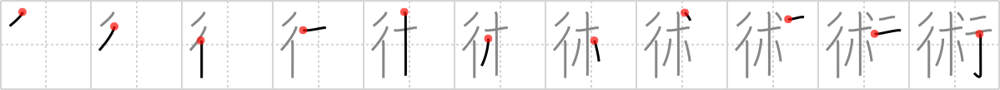

術
← →
art

Reading:
On-Yomi: ジュツ — Kun-Yomi: すべ
Heisig story:
Boulevard . . . resin.
Koohii stories:
1) [fuaburisu] 6-1-2006(194): Behold the "Boulev'Art" : a life-size section of a boulevard cast in a huge block of resin. Some call it … art.
2) [thermal] 30-6-2008(58): The definition of art is getting more and more loose these days. Why even some resin spilled onto the boulevard is now counted as art! Hmmph!
3) [nest0r] 5-2-2008(25): I get it, when the resin is on a boulevard instead of a road (see complaints in mention (#1524 述)), it's art.
4) [dingomick] 2-3-2007(22): The violinists(resin) practive their art on the boulevard much to the pleasure of passersby.
5) [the_marshal] 27-5-2006(21): An modert artist exposes his sculpute on a boulevard…. here you can see his latestest creation, a sculputure made out of resin.